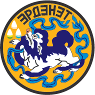
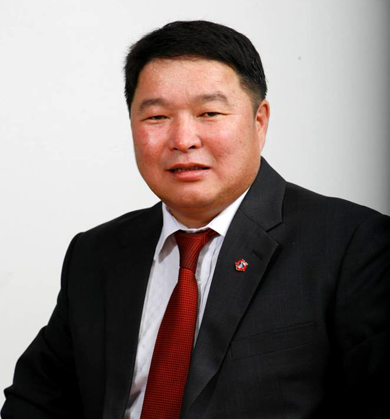

Centre of aimag- City of Erdenet, situated 410 km away from UB.
Number of sums-2
Orhon aimag was established in 1994.
Territory- 0.84 thousand km2
Livestock- 210.0 thousand

Governor BATLUT.D
Number of sums-2
Orhon aimag was established in 1994.
Territory- 0.84 thousand km2
Livestock- 210.0 thousand
A rich deposit of copper and molybdenum was discovered by Mongolian, Russian and Czechoslovakian geologists in the territory of the aimag in 1967-1970. In 1974 building of a Soviet-Mongolian copper ore dressing "Erdenet" enterprise began. Now the enterprise is considered one of the ten biggest plants in the world. That was the first step of new city Erdenet. The enterprise is very important in terms of economics and produces 25% of total budget, 51.5% of the total national export products. Previously Orhon aimag was a part of Bulgan aimag so the biodiversity and climate are almost the same as Bulgan. Total livestock is 115.2 thousand heads.